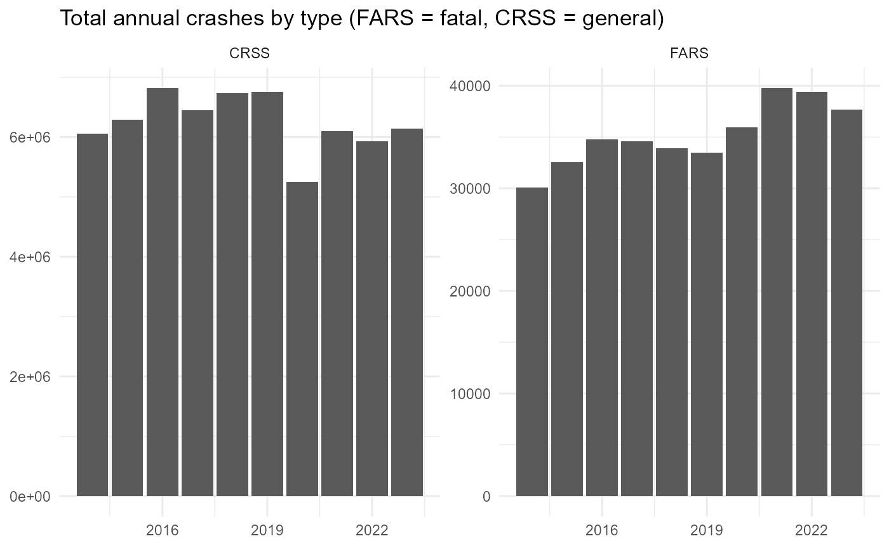
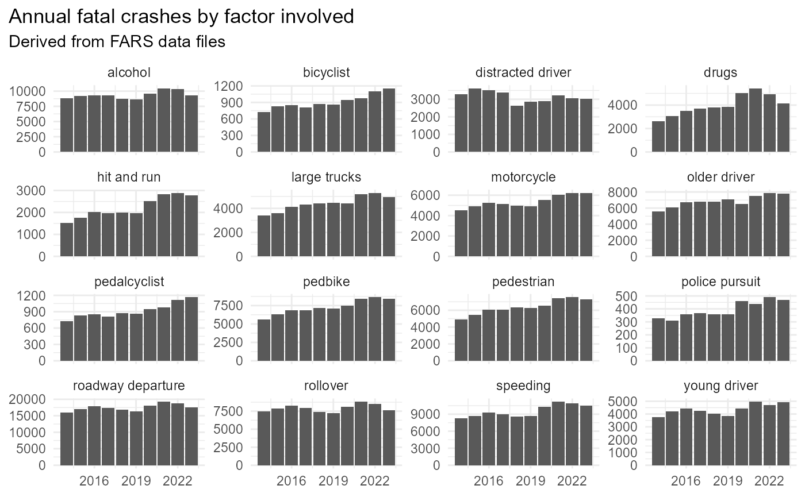
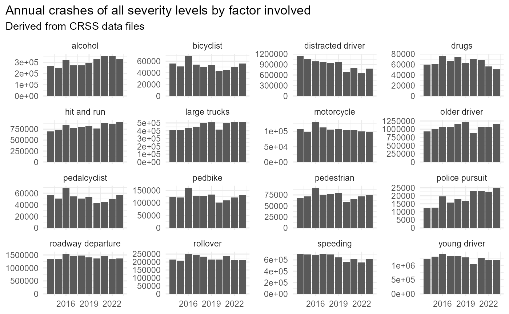
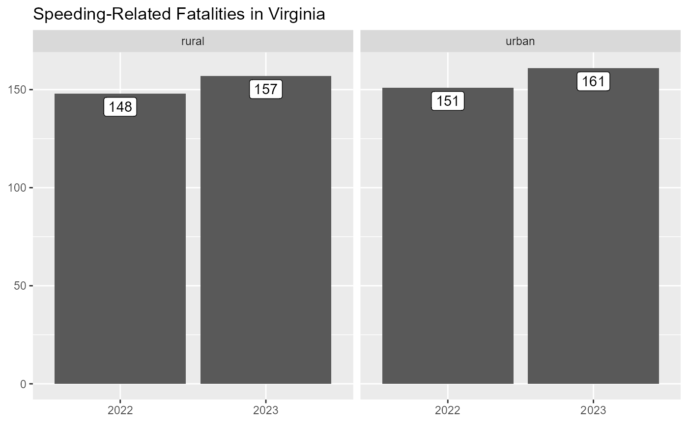

Counts
A first step in many transportation safety analyses involves counting
the number of relevant crashes, fatalities, or people involved.
counts() lets users specify what to count,
where to count them (rural/urban and/or in specified states or
regions), who to include, the interval over which to
count (annually or monthly), and factors involved in the
crashes. It returns a simple tibble that can be easily piped into
ggplot() to quickly visualize counts.
First we load the required libraries:
## Warning: package 'ggplot2' was built under R version 4.4.3annual_counts
rfars includes annual_counts, a table of
annual crash counts:
rfars::annual_counts %>%
filter(what == "crashes", involved == "any") %>%
ggplot(aes(x=year, y=n)) +
geom_col() +
facet_wrap(.~source, nrow=1, scales = "free_y") +
labs(title = "Total annual crashes by type (FARS = fatal, CRSS = general)", x=NULL, y=NULL) +
theme_minimal()
rfars::annual_counts %>%
filter(source=="FARS", involved != "any") %>%
ggplot(aes(x=year, y=n)) +
geom_col() +
facet_wrap(.~involved, scales = "free_y") +
labs(title = "Annual fatal crashes by factor involved", subtitle = "Derived from FARS data files", x=NULL, y=NULL) +
theme_minimal() +
theme(plot.title.position = "plot")
rfars::annual_counts %>%
filter(source=="CRSS", involved != "any") %>%
ggplot(aes(x=year, y=n)) +
geom_col() +
facet_wrap(.~involved, scales = "free_y") +
labs(title = "Annual crashes of all severity levels by factor involved", subtitle = "Derived from CRSS data files", x=NULL, y=NULL) +
theme_minimal() +
theme(plot.title.position = "plot")
Generating Custom Counts
We can use get_fars() and then counts() to generate a variety of custom counts. Below we pull two years of data:
Then we can use counts() to get the monthly number of
crashes in Virginia:
my_counts <- counts(
df = myFARS,
where = list(states = "VA"),
what = "crashes",
interval = c("year", "month")
)This returns the following dataframe:
knitr::kable(my_counts, format = "html")| year | month | what | states | region | urb | who | involved | n |
|---|---|---|---|---|---|---|---|---|
| 2022 | Jan | crashes | VA | all | all | all | any | 62 |
| 2022 | Feb | crashes | VA | all | all | all | any | 84 |
| 2022 | Mar | crashes | VA | all | all | all | any | 63 |
| 2022 | Apr | crashes | VA | all | all | all | any | 58 |
| 2022 | May | crashes | VA | all | all | all | any | 84 |
| 2022 | Jun | crashes | VA | all | all | all | any | 84 |
| 2022 | Jul | crashes | VA | all | all | all | any | 82 |
| 2022 | Aug | crashes | VA | all | all | all | any | 87 |
| 2022 | Sep | crashes | VA | all | all | all | any | 93 |
| 2022 | Oct | crashes | VA | all | all | all | any | 99 |
| 2022 | Nov | crashes | VA | all | all | all | any | 85 |
| 2022 | Dec | crashes | VA | all | all | all | any | 63 |
| 2023 | Jan | crashes | VA | all | all | all | any | 78 |
| 2023 | Feb | crashes | VA | all | all | all | any | 48 |
| 2023 | Mar | crashes | VA | all | all | all | any | 60 |
| 2023 | Apr | crashes | VA | all | all | all | any | 75 |
| 2023 | May | crashes | VA | all | all | all | any | 77 |
| 2023 | Jun | crashes | VA | all | all | all | any | 72 |
| 2023 | Jul | crashes | VA | all | all | all | any | 68 |
| 2023 | Aug | crashes | VA | all | all | all | any | 93 |
| 2023 | Sep | crashes | VA | all | all | all | any | 85 |
| 2023 | Oct | crashes | VA | all | all | all | any | 69 |
| 2023 | Nov | crashes | VA | all | all | all | any | 71 |
| 2023 | Dec | crashes | VA | all | all | all | any | 59 |
Which we can graph:
my_counts %>%
mutate_at("year", factor) %>%
ggplot(aes(x=month, y=n, group=year, color=year, label=scales::comma(n))) +
geom_line(linewidth = 1.5) +
labs(x=NULL, y=NULL, title = "Fatal Crashes in Virginia") +
theme_minimal() +
theme(plot.title.position = "plot")
or
my_counts %>%
mutate(date = lubridate::make_date(year, month)) %>%
ggplot(aes(x=date, y=n, label=scales::comma(n))) +
geom_col() +
labs(x=NULL, y=NULL, title = "Fatal Crashes in Virginia") +
theme(plot.title.position = "plot")
We could alternatively count annual fatalities:
counts(
myFARS,
where = list(states = "VA"),
what = "fatalities",
interval = c("year")
) %>%
knitr::kable(format = "html")| year | what | states | region | urb | who | involved | n |
|---|---|---|---|---|---|---|---|
| 2022 | fatalities | VA | all | all | all | any | 1006 |
| 2023 | fatalities | VA | all | all | all | any | 913 |
Or fatalities involving speeding:
counts(
df = myFARS,
where = list(states = "VA"),
what = "fatalities",
interval = c("year"),
involved = "speeding"
) %>%
knitr::kable(format = "html")| year | what | states | region | urb | who | involved | n |
|---|---|---|---|---|---|---|---|
| 2022 | fatalities | VA | all | all | all | speeding | 299 |
| 2023 | fatalities | VA | all | all | all | speeding | 321 |
Or fatalities involving speeding in rural areas:
counts(
myFARS,
where = list(states = "VA", urb="rural"),
what = "fatalities",
interval = c("year"),
involved = "speeding"
) %>%
knitr::kable(format = "html")| year | what | states | region | urb | who | involved | n |
|---|---|---|---|---|---|---|---|
| 2022 | fatalities | VA | all | rural | all | speeding | 148 |
| 2023 | fatalities | VA | all | rural | all | speeding | 157 |
Or we can use involved = ‘each’ to see all of the problems in one state:
counts(
df = myFARS,
where = list(states = "VA"),
what = "crashes",
interval = "year",
involved = "each"
) %>%
pivot_wider(names_from = "year", values_from = "n") %>%
arrange(desc(`2023`)) %>%
knitr::kable(format = "html")## Note: rfars::counts() uses the variables alc_res and dr_drink to determine alcohol involvement. NHTSA reports counts using multiple imputation to estimate missing BAC values. See vignette('Alcohol Counts', package = 'rfars') for more information.| what | states | region | urb | who | involved | 2022 | 2023 |
|---|---|---|---|---|---|---|---|
| crashes | VA | all | all | all | roadway departure | 507 | 474 |
| crashes | VA | all | all | all | speeding | 276 | 292 |
| crashes | VA | all | all | all | rollover | 316 | 274 |
| crashes | VA | all | all | all | alcohol | 259 | 223 |
| crashes | VA | all | all | all | older driver | 208 | 193 |
| crashes | VA | all | all | all | pedbike | 179 | 145 |
| crashes | VA | all | all | all | pedestrian | 168 | 130 |
| crashes | VA | all | all | all | motorcycle | 118 | 126 |
| crashes | VA | all | all | all | large trucks | 109 | 111 |
| crashes | VA | all | all | all | young driver | 108 | 102 |
| crashes | VA | all | all | all | distracted driver | 82 | 52 |
| crashes | VA | all | all | all | hit and run | 51 | 38 |
| crashes | VA | all | all | all | drugs | 37 | 21 |
| crashes | VA | all | all | all | police pursuit | 11 | 19 |
| crashes | VA | all | all | all | bicyclist | 11 | 15 |
| crashes | VA | all | all | all | pedalcyclist | 11 | 15 |
Comparing Counts
We can use compare_counts() to quickly produce
comparison graphs. Below we compare speeding-related fatalities in rural
and urban areas:
compare_counts(
df = myFARS,
interval = "year",
involved = "speeding",
what = "fatalities",
where = list(states = "VA", urb="rural"),
where2 = list(states = "VA", urb="urban")
) %>%
ggplot(aes(x=factor(year), y=n, label=scales::comma(n))) +
geom_col() +
geom_label(vjust=1.2) +
facet_wrap(.~urb) +
labs(x=NULL, y=NULL, title = "Speeding-Related Fatalities in Virginia", fill=NULL) 
And here we compare speeding-related crashes to those related to distraction:
compare_counts(
df = myFARS,
where = list(states = "VA"),
interval = "year",
involved = "speeding",
involved2 = "distracted driver",
what = "crashes",
) %>%
ggplot(aes(x=factor(year), y=n, label=scales::comma(n))) +
geom_col() +
geom_label(vjust=1.2) +
facet_wrap(.~involved) +
labs(x=NULL, y=NULL, title = "Speeding- and Distraction-Related Crashes in Virginia", fill=NULL)